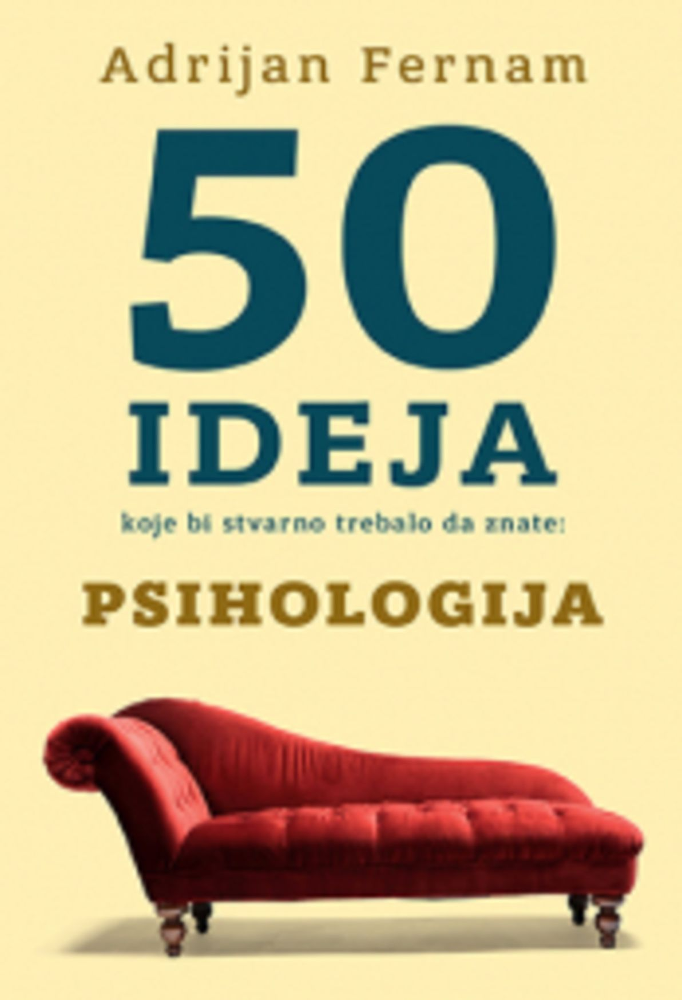
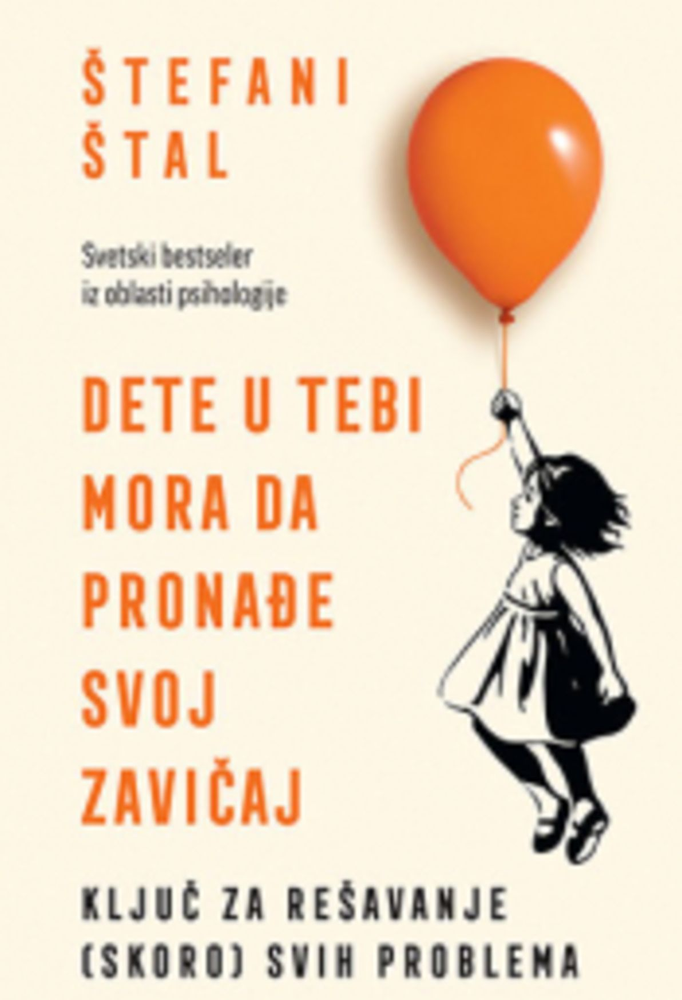

PITANJE
Problemi sa paničnim napadima
Jako dugo imam probleme sa paničnim napadima. Osećam stezanje u grlu sto je postalo baš problem sada, uzimao sam lekove kao terapiju sto mi je psihijatar prepisao i sam sam prestao da ih uzimam. Smatrao sam da mi više ne trebaju. Prošle nedelje sam imao učestale napade. Imam fizicke probleme kao stezanje u grlu i bol srca. Kako da pomognem sam sebi? Da li je bolje posavetovati se sa stručnim licem ili da sam nastavim sa prethodnom terapijom?
Autor odgovora: Anonimno
Zdravo! I sam sam se borio sa istim problemom, ali sam ga uspešno rešio uz pomoć psihologa. Preporučujem ti da ne uzimaš sam na svoju ruku nijednu vrstu leka, jer posledice mogu biti opasne. Proslo je 2 godine od kada sam imao fizičke probleme odsnosno stezanje u grlo i znam kako ti je. Srećno!
Poštovani,
U svojoj dugogodnišnjoj praksi sam se mnogo puta susretao sa
pacijentima koji su imali isti ili sličan problem kao što je Vaš. Nikako nemojte da uzimate lekove na
svoju ruku, jer to može dovesti do naglih promena raspoloženja i samog statusa organizma, pa kad izazvati
da se osećate gore nego trenutno. Važno je praviti male korake ka uspehu. Najbolje bi bilo da kroz sve
situacije koje predstavljaju okidač na početku prolazite uz pomoć bliske osobe uz koju se osecaće sigurno
i zaštićeno. Za više informacija stojim Vam na raspolaganju.
Saveti i preporuke prilikom odgovaranja na pitanja
- Prilikom formulacije odgovora trudite se da odgovor bude što jasniji i precizniji
- Pre nego što pošaljete odgovor proverite da li je u skladu sa temom pitanja
- Ako niste verifikovani psiholog, molimo Vas da proverite da li imate mogućnost da odgovorite na postavljeno pitanje
- Vodite računa da je podrazumevano javno odgovaranje na pitanja. Ukoliko želite da anonimno odgovorite, molimo Vas da to i naznačite u odgovarajućem polju.
Preporučena literatura za sve ljubitelje psihologije
-
50 ideja koje bi stvarno trebalo da znate - Adrijan Fernam
Kolika je razlika između muškog i ženskog mozga? Postoji li zaista altruizam? Da li je naš um, odmah po rođenju, neispisana tablica? -
 Bez granica - Džim Kvik
Bez granica - Džim Kvik
Usavršite svoj mozak, učite brže i otključajte pristup izuzetnom životu za koji ste sposobni. -
Dete u tebi mora da pronađe svoj zavičaj - Štefani Štal
Ključ za rešavanje (skoro) svih problema. Svetski bestseler iz oblasti psihologije -
 Emocionalni prtljag - Vivijan Ditmar
Emocionalni prtljag - Vivijan Ditmar
Svako može, ako želi, da pronađe nešto dragoceno u ovoj knjizi i da naposletku nauči da se bolje nosi s negativnim emocijama. -
 Izgubljene veze - Johan Hari
Izgubljene veze - Johan Hari
Naučnici širom sveta otkrili su dokaze za devet različitih uzroka depresije. Neki od njih su ukorenjeni u našoj biologiji, ali većina ih je u načinu na koji danas živimo. -
Šta nam svako telo govori-Džo Navaro
Priručnik bivšeg agenta FBI-a za brzo „čitanje“ ljudi. Zašto je lice poslednje mesto na kojem treba tražiti znake iskrenih emocija? -
 Više se ne razumemo - Izabel Fijioza
Više se ne razumemo - Izabel Fijioza
U knjizi Više se ne razumemo otkrićemo šta se dešava u glavi i telu naših tinejdžera. -
Borba do pobede - Srđan Krstić
Ova knjiga je napisana s namerom da pomogne ljudima kojima je teško, onima koji ne vide izlaz.